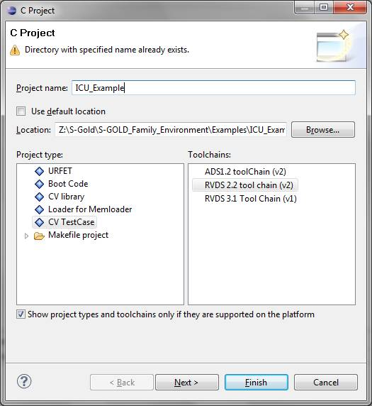

The only
prerequisite is to have a view containing the tools installed on your U: drive
before starting. The minimum config spec for this
view is:
element * CHECKEDOUT
element /IFX_Tools
/main/LATEST
element /IFX_Tools/...
T32_XGOLD223_BUILD24824V00.01.00
element /IFX_Tools/Lauterbach/...
/main/LATEST
element /IFX_Tools/...
RVCT_31_BUILD862
element /IFX_Tools/...
ARM_PATCH_BUILD861
element /IFX_Tools/...
GNUMAKE3_81
element /IFX_Tools/...
GNU_180505
element /IFX_Tools/...
GSMTIMER_1_0_0
load \IFX_Tools\gnu
load \IFX_Tools\Lauterbach
load \IFX_Tools\ARM
load \IFX_Tools\GSMTimer
Notes:
1.
The
label for Lauterbach may have changed in the
meantime. Look here
for latest config spec related to your project.
2.
What
is important is that your config spec includes the gnumake and the GSMtimer tools on
top of the usual include (Lauterbach and ARM).
For now, you can only create a project if you have
already a testcase with an existing makefile. If you
don’t have, then you need first to create a makefile (by
copying for example an existing one) and then you can create a project.
Go to File ->
New -> C project
Uncheck: use default location
Click on browse
and search for the folder containing your makefile.
Enter the name of
the project (we recommend to use the name of the folder as the name of the
test)
Select the
project type
Select the tool
chain
Press Finish.
It should look like this, in the end:

You can either do
a clean project (right click on the project and select Clean Project), this will do automatically
at the end of cleaning a compilation. Or you can right click on the project,
the select Build
Configurations->Build->All. This will launch an incremental
compilation.
You can also
press ctrl+B and this will launch a new build
(incremental).
Errors due to
compilation are reported in the Console window (as raw) or in the Problems
window (parsed). In this window, you can double click on an error. This will
open the corresponding file and set the cursor at the error location.
Once the project
is created please right click on the project name and click Add
libraries and include links. This will add some link names in
your project which will help to go to references which are not located in the
project but outside (environment or libraries).
Once clicked,
please wait a few seconds and the link folders will appear. Then Eclipse will
index again the project. It may take some more seconds depending on the nature
of the project. You will see the progress in the right bottom part of the
Eclipse window. Once indexing is done, you can go to any function declaration
by selecting the function and pressing F3.
Select File -> Import... and browse to the
folder containing the previous create C project.